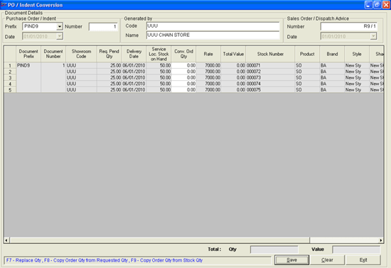

This option will manually generate Sales Order/ Dispatch Advice at POS based on the Purchase Orders sent to the vendors, where the delivery location for the material is a service location. The Sales Order/ Dispatch Advice will contain the item details and quantity to be delivered to each location by the service location.
On generating a Purchase Order, Shoper 9 prompts you if you want to generate the corresponding Sales Order. If you choose to generate it, the system automatically generates the Sales Order. Otherwise, you need to use this option PO / Indent Conversion to generate the Sales Order. The details in this generated Sales Order are sent to the service location during the next data synchronisation.
How to reach: Stock > Purchase Order > PO / Indent Conversion
The PO / Indent Conversion window is displayed.

Document Details
Purchase Order/Indent:
Prefix: Select the value for the prefix, HOPO8, HOPPO8, PIND8, PPO8.
Number: Type the number of the PO/Indent for the prefix chosen.
Date: The PO/Indent date is displayed after typing the number.
Generated by:
Code: The value of the code of the POS location (stores) is displayed for the typed PO/Indent number.
Name: The name of the POS location (stores) is displayed.
Sales Order/Dispatch Number
Number: This is a system generated Sales Order/ Dispatch number.
Date: The conversion date is displayed.
Grid:
The grid displays in the grid the details such as Document Prefix, Document Number, Showroom Code, Req.Pend Qty, Stock on Hand, Conv. Ord Qty (editable), Rate, Total Value, Stock Number and the details of the attributes selected.
Note: Only the field Conv. Ord Qty is editable.
Total:
Qty: This is the total of the item quantities for conversion.
Value: This is the monetary value of the quantities of the items for conversion.
F8: To copy requested quantity to the conversion order quantity